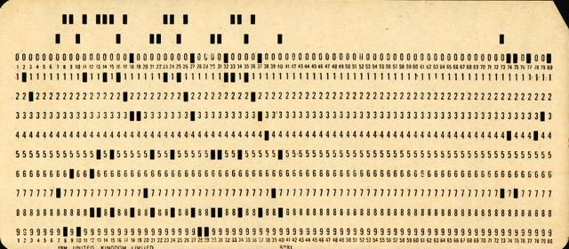
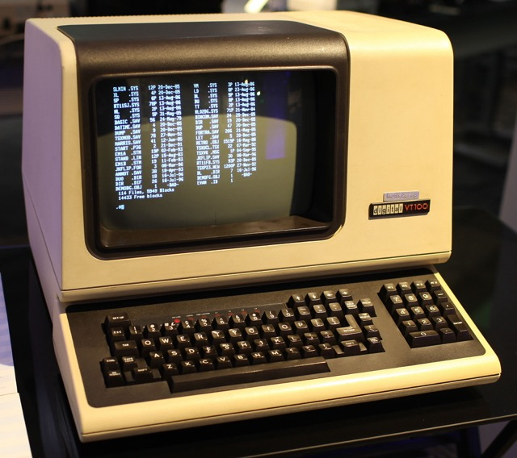
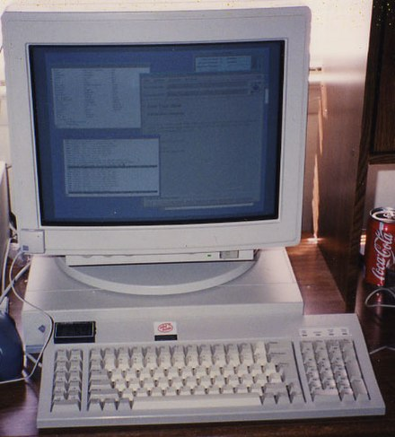

CPSC 405 - OS and Systems Programming
Preface
UMW CPSC 405 Catalog Description:
Operating Systems and Systems Programming (4 Credits)
Prerequisites: CPSC 305 and CPSC 340.
This course examines the abstractions above the hardware that make a computer usable to both programmers and users. These abstractions include processes, context switching, concurrent programming, semaphores, virtual addressing, transactions, access control, and virtualization. Many of these abstractions are the foundation for operating systems kernel development. The abstractions are also applicable to any large-scale programming project.
Programming intensive.
NOTE: I bolded the programming intensive attribute.
I am basing UWM's CPSC 405 on MIT's Operating System Class (course number PDOS 6.1810), which is part of the Parallel and Distributed Operating Systems (PDOS) section of MIT. The primary code component of MIT's PDOS is the Xv6 OS. In addition to the MIT material, I am also using material from OS Three Easy Pieces.
Xv6 is a teaching OS based on Unix V6, which was a somewhat famous version of Unix in the late 1970's. Xv6 is big enough to illustrate the basic design and implementation ideas in operating systems. On the other hand, Xv6 is far smaller than any modern production OS, and correspondingly easier to understand. Xv6 has a structure similar to many modern operating systems. Once you have studied and understand Xv6, you will find that the Xv6 kernel details is quite similar to other kernels such as Linux.
References can be found on the References Web Page
A Little Introduction to Gusty and OS
A central component of our CPSC 405 is MIT's Xv6 Operating System. Xv6 has been modeled after Unix Version 6, a somewhat famous version. Ken Thompson and Dennis Ritchie (of Bell Labs) were the principle developers of Unix. They developed Unix on a Digital Equipment Corporation PDP. DEC was a prominent computer company in the 1970s and 1980s designing and builing minicomputers; however, DEC missed the microprocessor revolution and fizzled away. In May 1975, Unix Version 6 was the first version of Unix to be widely distributed outside of Bell Labs. Bell Labs was a research lab at AT&T, who once had a monopoly on the old US phone system. As part of AY&T's agreement with the US Government, they could not market and sell other products. As a result, Bell Labs distributed Unix source code to others on 9-track tapes. Various Universities used Unix Version 6 in their classes and several created their own variants. Berkeley Unix was one of the more popular university variants of Unix. John Lyons of University of New South Wales created his famous Commentary on the Unix Operating System, which wonderfully documented Unix. Xv6 is a real operating system, but it is small and "easy" to understand - at least when compared to a full-blown Linux. Our Xv6 runs on a QEMU RISC-V emulator.
The following photo shows Ken Thompson (sitting) and Dennis Ritchie working on a PDP computer. Notice the input devices is a teletype, which has a keyboard but does not have a display. Instead, key strokes are printed on paper that scrolls. I have also created code on teletypes similar to the one Ken Thompson is using in the photo. When editing code on a teletype, you enter commands to list ranges of lines in the file. Then, you can enter a command to edit a specif line. Then you can list the range of lines again to ensure you edit is correct.

I wrote my first program in January 1974 using punched cards. This was my freshman year at Randolph-Macon College. The program was in some special language that was designed to use a computer for education. I studied Math at RMC, but I also took various (maybe all) computer science courses. I learned assembly language, computer architecture, FORTRAN, and how to write a compiler. I never dreamed that computer science would be such an important aspect of my life. I was developing software on punched cards at NSWC Dahlgren as late as 1983. From September 1978 until September 1979, I developed software using a teletype just like one in the photo of Thompson and Ritchie.

My last project using punched cards was rehosting the Trident Higher Level Language (THLL) compiler from a CDC 6700 mainframe to a DEC VAX. After we had THLL on the VAX (Sometime in 1983), I began developing software using a VT100 and a few years later moved to VT220. A VT100 is shown below. You should notice the display is just like a Linux terminal window; however, the OS was VAX/VMS, which was similar to Unix, but it was the comercial OS provided by DEC with the VAX computers. With a VT100 and VT220, you had a full-screen editor, EDT, which was similar to VIM, but again a DEC product. VAX/VMS was my first experience with email.

Sometime around 1990, I began software development using a monochrome, Sun, bit-mapped graphics displays with multiple windows.

This was my first encounter with Unix, and it was also my first encounter developing code with multiple, movable "windows". Sun called their Unix SunOS, and they later renamed it to Solaris. SunOS was based on the Berkeley Software Distribution (BSD) Unix, which was based on the original AT&T Unix, which is what our Xv6 is mimicking. When AT&T made their Unix OS available to others, universities adopted it and made additions. University of California, Berkeley probably made the most additions. They added network programming with the Berkeley Socket API, which is still relavent today - just like Unix and Linux. It was around 1990 that various companies got invovled in a huge legal, brouhaha over Unix - arguing over who had the rights to what. The brouhaha was over the source code, not the API and functionality. It was during this legal brouhaha that Linus Torvalds began developing his Linux, which included the Unix functionality and API, written from scratch - brand new source code. Linus released his first version of Linux in 1991, and the beauty of Linux is that it is open source - no legal wrangling. The open source Linux can be used by whomever.
I continued developing software at NSWC Dahlgren until I retired in 2011 and began teaching at UMW. Throughout my software engineering career, I developed compilers, linkers, loaders, operating systems, file systems, network systems, and real-time missile prelaunch systems. Once I moved beyond punched cards and teletypes and VT terminals, all of my software development was done with simple text editors (like VIM) and makefiles (or their equivalent).
Questions or comments regarding CPSC 405? Send e-mail to Gusty at ecooper@umw.edu.
 Top //
CPSC 405 home //
Last updated 8-Aug-2024 13:30 EST
Top //
CPSC 405 home //
Last updated 8-Aug-2024 13:30 EST